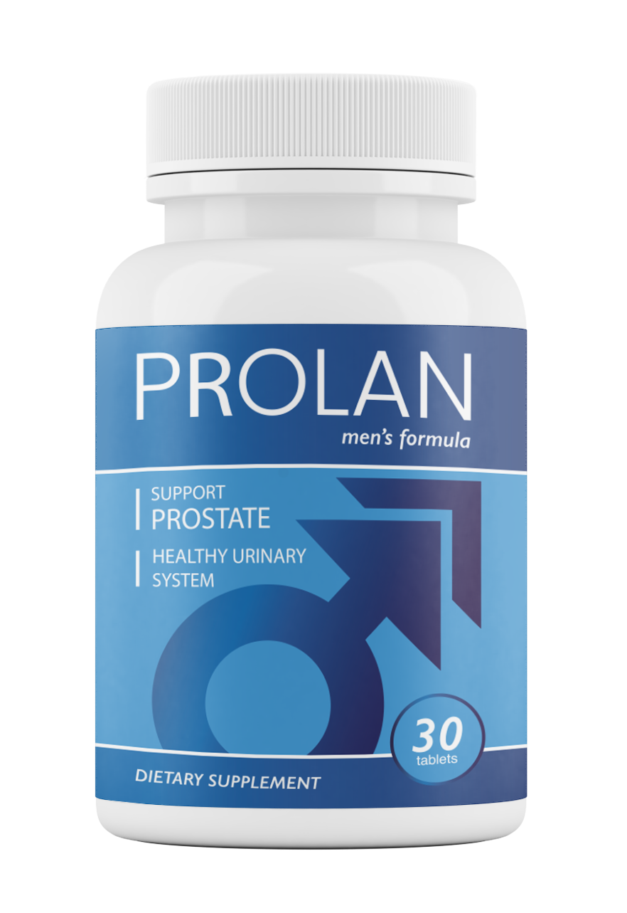

پیشاب کے مسائل اور درد سے نجات کے لیے جدید قدرتی فارمولا۔

پرولان میں موجود زنک اور قدرتی اجزاء مثانے اور پروسٹیٹ کے خلیوں کی حفاظت کرتے ہیں۔
رات کو بار بار پیشاب آنے کی حاجت کو کم کرنے اور روانی کو بہتر بنانے میں مددگار۔
سوزش کو کم کرتا ہے اور درد سے نجات دلا کر پرسکون زندگی فراہم کرتا ہے۔
جدید تحقیق کی بنیاد پر تیار کردہ، پرولان مردوں کی صحت کے لیے ایک مکمل سپلیمنٹ ہے۔ اس میں شامل گوکھرو، جنکگو بلوبا اور زنک کا بہترین امتزاج پروسٹیٹ کے افعال کو معمول پر لانے میں مدد کرتا ہے۔